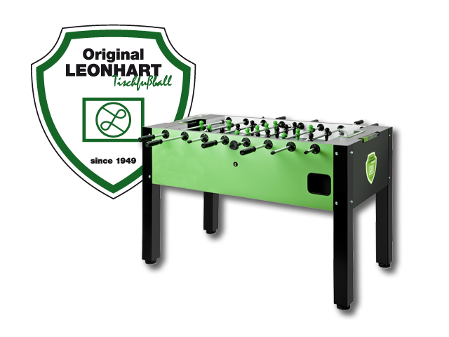

STRT Pro 2026
Zürich Open #3
Schön, seid ihr da.
Samstag, 12. September 2026
Offenes Doppel
Live gestreamt
600.– · 300.– · 150.–
Die Serie bisher
36Tour 1
→
30Tour 2
→
31Heute
Ausverkauft bei 48 Teams.
Helft mit · macht Werbung für den 14. November
Die Podeste bisher
Tour 123. Mai · 36 Teams
1
Giorgino GiulioMahnig Esther
2
Macchia MarcoMorgenthaler Daniel
3
Zimmermann ChristophDi Santo Fabio
Tour 218. Juli · 30 Teams
1
Macchia MarcoMorgenthaler Daniel
2
Gabriel EliyoDurakoski Reshat
3
Zuber SilvanZimmermann Christoph
Im Rennen um den Leonhart-Tisch

Gesamtsieger der Serie gewinnt
einen
Leonhart-Tisch
Leonhart-Tisch
1
Morgenthaler Daniel
1800
6
Mahnig Esther
1000
2
Macchia Marco
1800
7
Zuber Silvan
985
3
Giorgino Giulio
1500
8
Durakoski Reshat
850
4
Zimmermann Christoph
1400
9
Gabriel Eliyo
800
5
Schlager Nico
1200
10
Ganz Roger
760
Noch nichts entschieden — die letzte Tour ist am 14. November.
Das Turnier
Format & Tableaus
Offenes Doppel · ITSF-Regeln
6 Runden Schweizer-System
Vorrunde: Best of 3 auf 5 — ohne Verlängerung
KO: Best of 5 — mit Verlängerung bis max. 8
Resultate immer in der Coral-App eintragen
ARang 1–16
BRang 17–32
Cder Rest
Verhaltensregeln
Was geht — und was nicht
Keine Getränke & Esswaren auf den Tischen
Spiele werden nicht ausgerufen — selbst an den Tisch
Max. 2 Min. Einspielen — v. a. auf den Stream-Tischen
Nicht angetreten → Verwarnung → Satzverlust
Gut zu wissen
Kurz & wichtig
Kein W-LAN
Kein Bargeld — Karte, Twint im Notfall
Nur das Bar-Team hinter die Bar
Bälle werden nicht gestellt — an der Bar erhältlich
Rauchen nur draussen
Fotos evtl. auf Social Media — sagt es uns, wenn nicht
Essen & Trinken
Verpflegung
Snacks, Sandwiches & Kuchen an der Bar
Weiteres selbst mitbringen oder Coop nebenan
Vom Turnier keine Verpflegung vorgesehen
Wir sind auf Sendung
Livestream läuft
Kameras auf zwei Tischen — welche, sagt die Turnierleitung
Mikrofone sind an — Achtung, was ihr sagt
Live-Statistiken laufen mit
Side Event
Crazy DYP
frühestens ab 17:30 Uhr
Fürs Finale pausieren wir den Crazy DYP — damit alle zuschauen.
Macht Stimmung im Finale!
Das Team heute
Fragen? Kommt auf uns zu.
Turnierleitung & Chef des Tages
Bar & Check-in
Stream & Kommentar
Alles freiwillig — danke euch!
Unterstütz uns
Folg uns — jeder zählt.
Instagram
@tischfussballclubzuerich
@tischfussballclubzuerich
YouTube
@tischfussballclubzuerich
@tischfussballclubzuerich
Noch besser: werdet Mitglied — so unterstützt ihr uns am meisten!
Los geht's
Viel Spass
und gutes Spiel.
Bleibt bis zum Final — es lohnt sich.